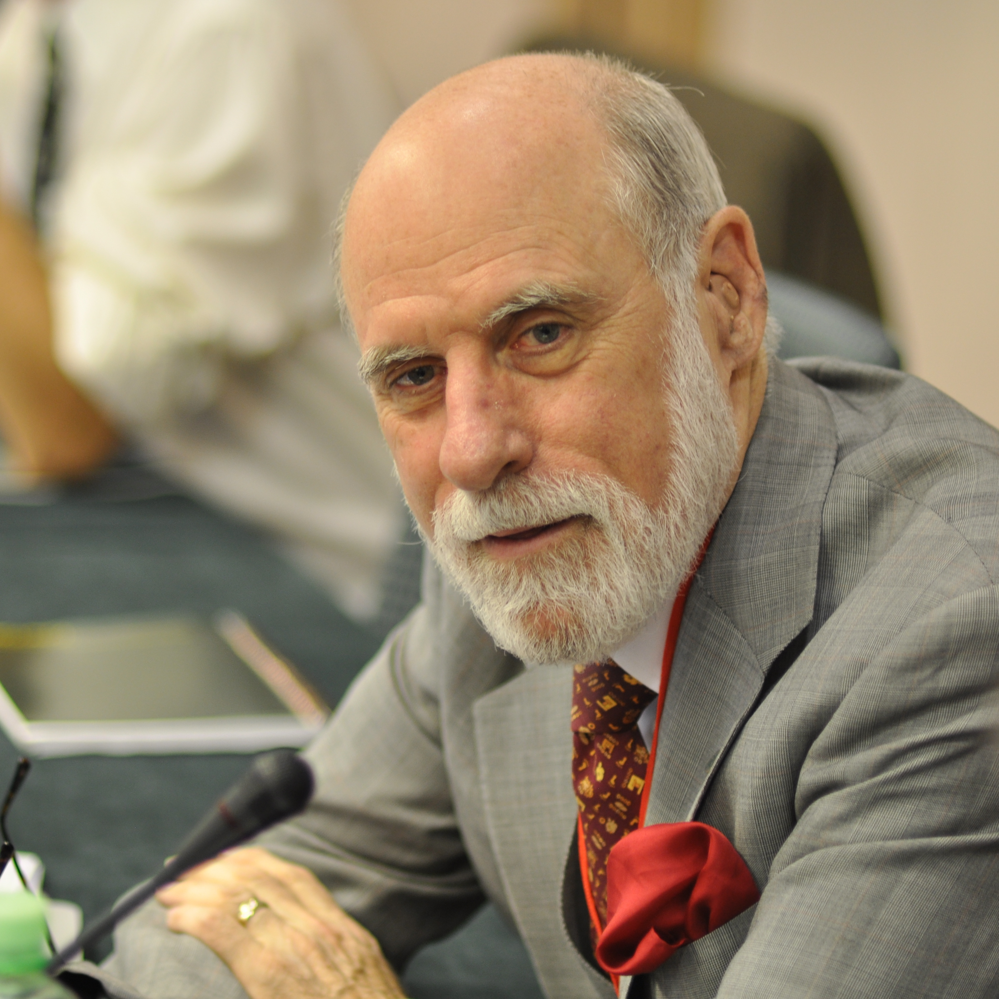
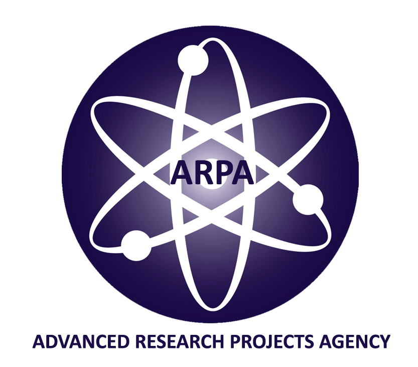

Vinton Gray Cerf
Basic Info
(Born June 23, 1943, New Haven, Connecticut, United States) Is an American computer scientist, and one of the founders of the Internet, along with Robert Kahn, they are also known as "The Fathers of the Internet"
Cerf did his bachelor's degree in mathematic from Stanford University in California in 1965, his master's degree in 1970 and doctorate degree in 1972 in computer science from University of California in Los Angeles.
Career
Cerf1 had an interest in the world of computers from an early age. He had done bachelor's in mathematics, but still the interest of computing kept growing. He said "There was something amazingly enticing about programming, You created your own universe and you were master of it. The computer would do anything you programmed it to do. It was this unbelievable sandbox in which every grain of sand was under your control." so joined IBM2 for work as a systems engineer there he had contributed much to Quicktran, a FORTRAN3 based time-sharing system. And did his further education in computing i.e Msc PhD. In the fall of 1968, when Cerf was at UCLA ARPA set up a program for building the ARPANET4, he wrote the communication protocol for the ARPANET. That was the first computer network based on packet switching, before that time this technology was untested. At UCLA he also met Kahn, his professional relationship with Kahn was one of the most important professional relation of his career. After doing his doctorate from UCLA, Cerf moved to Stanford University and became an assistant professor, there he conducted research on packet network interconnection protocols and co-designed the DoD TCP/IP protocol suite with Kahn.
Cerf and Kahn began working out a plan in 1973. To the International Networking Group they presented a paper outlining their ideas. In May 1974, they completed their paper and entitled, "A Protocol for Packet Network Intercommunication." They described a new protocol they called the transmission-control protocol (TCP). They were going to move or enclose the packets in "datagrams." Those datagrams were going to act like envelopes containing letters. The content and format of the letter is not important for its delivery. The information on the envelope is standardized to facilitate delivery. Gateway computers would simply read only the delivery information contained in the datagrams and deliver the contents to host computers. Only the host computers would actually "open" the envelope and read the actual contents of the packet. TCP allowed networks to be joined into a network of networks, or what we now call the Internet.
Cerf continued to refine TCP. In 1976, he took a job as program manager for the project the "ARPA Internet" at ARPA.In 1978 they had agreat success in it, they split TCP into two parts. One was TCP that was responsible for routing packages and other was a separate protocol called the Internet Protocol (IP).TCP had the job of dividing messages into datagrams, reassembling messages, detecting errors, putting packets in the right order, and resending lost packets. The new protocol was called TCP/IP. It went on to become the standard for all Internet communication.
During 1997, Cerf joined the Board of Trustees of Gallaudet University, a university for the education of the deaf and hard-of-hearing. Cerf himself is hard of hearing. He has also served on the university's Board of Associates.
Cerf has worked for Google5 as a Vice President and Chief Internet Evangelist since October 2005.
External Links
- [Visited On 06/11/2014] Wikipedia
- [Visited On 06/11/2014] IBM
- [Visited On 06/11/2014] Fortran
- [Visited On 06/11/2014] ARPANET
- [Visited On 06/11/2014] Google
- [Visited On 06/11/2014] Vint Cerf Image
- [Visited On 06/11/2014] ARPA Logo
- [Visited On 06/11/2014] Google logo